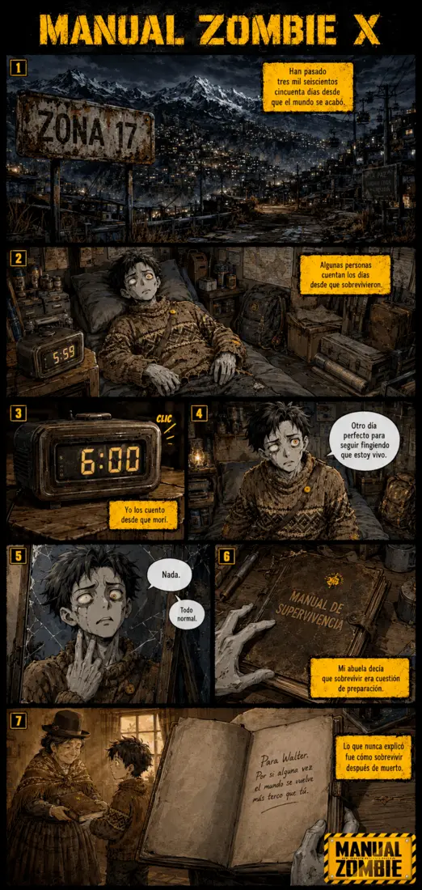

← Inicio
MENÚ DE CAPÍTULOS
Haz clic en un capítulo para leerlo. Los bloqueados se irán revelando.

PRÓLOGO
1
CAPÍTULO 1
Parecer Vivo
2
CAPÍTULO 2
Los muertos también sueñan
3
CAPÍTULO 3
Siempre hay espacio al fondo
4
CAPÍTULO 4
La que no se asusta
5
CAPÍTULO 5
Tres hermanos y un zombie
🔒
CAPÍTULO 6
🔒
CAPÍTULO 7
🔒
CAPÍTULO 8
🔒
CAPÍTULO 9
🔒
CAPÍTULO 10
🔒
CAPÍTULO 11
🔒
CAPÍTULO 12
🔒
CAPÍTULO 13
🔒
CAPÍTULO 14
🔒
CAPÍTULO 15
🔒
CAPÍTULO 16
🔒
CAPÍTULO 17
🔒
CAPÍTULO 18
🔒
CAPÍTULO 19
🔒
CAPÍTULO 20